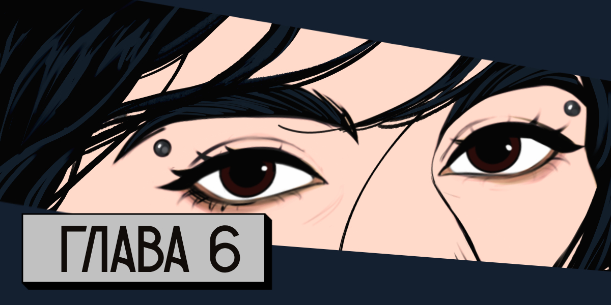

Дорога выматывает. Жара выматывает. Некоторые бытовые штуки выматывают, когда мы не можем сразу решить, что и как делать — вот тебе и минусы быть почти всегда вместе. Нет, я люблю девок, но отдохнуть иногда хочется…
Мы давно не ночевали на нормальной кровати и в нормальном месте. Даже Тора в деревне Торханы отдохнула так себе, хоть и рвалась до этого в дом. Но я ее понимаю: если бы я не боялась оставить машину без присмотра в таком месте, то наверное и сама бы пошла ночевать в дом — хоть в одежде, хоть на покрывале, но полежать бы на мягком и в полный рост. Хоть немного.
Чем дальше мы продвигались по стране, тем и правда становилось малолюднее и как будто безопаснее. Поэтому пружина напряжения и постоянной готовности бежать у меня потихоньку распрямлялась. Хоть эти киношные зомби перестали сниться, а то я уже замучилась сонно убегать от этих шустрых пиздюков на ватных ногах и пытаться спастись на машине, которую кто-то крал у меня прямо из-под носа.
Мы все ближе к Казани. К месту, где думаем остановиться на время, чтобы переждать эпидемию.
Тора весь вчерашний день шерстила каналы, по интернету искала новости о въезде в город: есть ли КПП или местные перекрытия, какой карантин, можно ли снять хату и можно ли вообще въезжать в город…
— Что там, совсем ничего? — спрашивает Настя.
— Не могут же они совсем ничего не писать, — не понимаю я.
— Да тут еще и интернет отваливается часто, — бурчит Тора.
— Добро пожаловать на русские дороги, — усмехаюсь я. — У нас есть бесконечная трасса и нет нормальной сети на ней.
— Ну-у тут есть вбросы, что город закрыт…
— Что логично, — поддакивает Настя, и я тоже киваю, хоть и вяло.
— Но подробностей нет. Хотя… подождите-ка, что-то нашла. От других заезжих. Может остановимся? Покурить охота.
— Можно, — соглашаюсь я.
Тора в последнее время курит все чаще и больше, словно успокаивает себя этим действием. Благо, люди еще не считают сигареты товаром первой необходимости. Но Настя предполагает, что в некоторых местах мужики специально набирают лишнего, чтобы потом обмениваться или продавать.
Тора на какое-то время затихает.
Мы проезжаем ж/д переезд и въезжаем в маленькое поселение. Интересно, поезда сейчас ещё ходят, или любое транспортное сообщение между городами отменили на время? Вдруг есть возможность на поезде добраться до Москвы, вдруг где-то там есть дополнительное КПП и карантин…
— Давно не видела поездов, — задумчиво говорит Настя.
— У дураков мысли сходятся, — хмыкаю я. — Может у нас с ними просто не совпадают расписания, поэтому мы не встречаем их.
— Очень надеюсь. Да наверняка они сейчас не будут ходить. По началу да. Ты же слышала, что пишут об ухудшении ситуации.
— Пиздец, — мотаю я головой.
Через пару минут я сворачиваю к заправке, возле которой стоит несколько легковых машин — вроде нестрашно. Бак наполовину пустой, но, несмотря на то, что с недавних пор я заныкала в багажнике десятилитровую металлическую канистру с бензином за пакетами с вещами, при каждой возможности я стараюсь заправиться.
Не отрываясь от телефона, Тора сразу же выходит из машины.
На колонке висит листок, на котором написано, что девяносто пятого бензина нет. Да, на крайний случай сгодится и девяносто второй, но уж точно не стоит мешать — какая знакомая фраза. Поэтому я отъезжаю к Торе, к выезду. Замечаю, как в окне здания мелькает настороженное женское лицо в медицинской маске. Пугливые. Не могу их винить.
— Нашла, — припечатывает Тора, глубоко затягиваясь. — Изоляторов нет. В город попасть невозможно.
— То есть как? — удивляюсь я. — А как жители домой попадают?
— Им в начале месяца дали сколько-то дней, чтобы приехать, и они как раз сейчас на карантине сидят. Но вот без прописки не пускают. То есть, ладно, спиздела: не изоляторов нет, а изоляторов для иногородних нет.
— Поня-ятно, — тянет Настя. — Продинамили нас. Накрылся план.
— Да подожди, — осаждаю я ее, хоть и понимаю, что она права. Но не хочется жить непонятно где на открытой территории и каждый день подвергаться опасности. — Тора, поищи, плиз, что там дальше. За Уралом. Там ещё меньше людей.
— Не хотелось бы забираться так далеко, — хмурится Тора, но опять снимает блокировку на телефоне.
— А что в Москве?.. — уточняет Настя.
— Пишут, что ещё возле пары перекрытий случались вспышки.
— Жесть, — мотаю я головой и тоже достаю телефон. — Так, нам как минимум надо где-то отдохнуть пару дней. По крайней мере мне точно. Как насчёт гостиницы?
— Я — за! — чуть ли не вскрикивает Тора и усиленно кивает, даже чуть ли не подпрыгивает.
— Ты же только что ночевала в доме, с удобствами, — ехидно улыбается Настя.
— Там было не так уж и удобно, — бурчит Тора.
— Но я тоже за, — продолжает Настя. — Нет, на машинку не жалуюсь. Но от кровати не откажусь.
— Я тоже так говорила, а вы не захотели идти в дом, — смешливо хмыкает Тора.
— Во-первых, это мерзко. Там жили другие люди. Ты уверена, что они ничем не болели, что они мылись, что не трахались на всех поверхностях? Может они постельное белье раз в год стирали? Во-вторых, там душно. Дома нагреваются сильнее, и если не проветривать пару дней, то там хуже, чем на улице. Нужны еще причины? А то я могу… — Мы с Торой ошарашенно и синхронно отрицательно мотаем головами. — Тогда пошли в машину, не могу на этом пекле стоять.
Мы забираемся в салон, где я включаю кондей, к которому Настя подставляет лицо.
В получасе езды нахожу гостиницу в небольшом селе, в котором, надеюсь, нет никаких зараженных, потому что в интернете про него как таковой информации не найти. Она работает, и там даже есть свободные номера. Хотя мне казалось, что такие места будут забиты под завязку.
Здание "кафе гостиницы", как значится на фасаде, трехэтажное, в желто-телесных цветах и огорожено бетонным забором, что несомненный плюс. Мы останавливаемся недалеко от ворот.
Тора хватает рюкзак.
— Погодь, — стопорю я ее. — Давай вначале попробуем заселиться. Потом если что притащим нужное.
Калитка закрыта. Как и ворота.
— Они точно работают? — подергав ручку калитки, Настя посматривает на здание сквозь дырки в заборе. Хорошее место, мне уже нравится. Вот бы ещё и попасть туда.
— В интернете писали, что да, — недовольно отвечаю я. — Сейчас.
Что творится на первых этажах, сложно разобрать. Но я вижу, как у некоторых окон второго этажа мелькают силуэты. И тут же исчезают.
Потными от духоты пальцами набираю номер гостиницы, звоню. Через пару гудков отвечает женщина. Сурово отчеканивает:
— Кафе-гостиница Куралово. Что подсказать?
— Здравствуйте, к вам можно как-то попасть? А то мы стоим тут под воротами, но все закрыто…
— Сколько вас? — ну ни грамма доброты.
— Трое, — объясняю я и почему-то добавляю: — девушки.
— Сейчас выйду, — смягчается женщина.
Через полминуты нам открывает калитку этакая домашняя темноволосая женщина в спортивных штанах, кроссовках и свободной футболке. Ей лет пятьдесят, но выглядит она моложе. В руках женщина держит сковороду.
— Проходите, — зовёт она. — Не пугайтесь, тут просто в последнее время иногда балуют и запугивают ограблением. Вот и приходится брать хоть какое-то оружие с собой.
— А охранник у вас есть? — Настя замедляется и опять смеривает взглядом гостиницу.